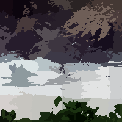

Simple Linear Iterative Clustering
Superpixels based on k-means clustering
Regions size
Size of a region side
name: cluster-size
type: int
default: 32
minimum: 2
maximum: +inf
ui-minimum: 2
ui-maximum: 1024
ui-gamma: 1.00
ui-step-small: 1
ui-step-big: 100
Compactness
Cluster size
name: compactness
type: int
default: 20
minimum: 1
maximum: 40
ui-minimum: 1
ui-maximum: 40
ui-gamma: 1.00
ui-step-small: 1
ui-step-big: 5
Iterations
Number of iterations
name: iterations
type: int
default: 1
minimum: 1
maximum: 30
ui-minimum: 1
ui-maximum: 15
ui-gamma: 1.00
ui-step-small: 1
ui-step-big: 5
pads: input output
parent-class: GeglOperationFilter
categories: color segmentation
source: operations/common/slic.c
 This page is part of the online GEGL Documentation, GEGL is a data flow based image processing library/framework, made to fuel GIMPs high-bit depth non-destructive editing future.
This page is part of the online GEGL Documentation, GEGL is a data flow based image processing library/framework, made to fuel GIMPs high-bit depth non-destructive editing future.